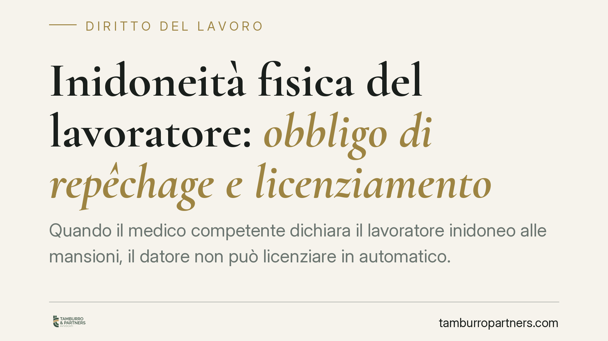

Inidoneità fisica del lavoratore: obbligo di repêchage e licenziamento
Quando il medico competente dichiara il lavoratore inidoneo alle mansioni, il datore non può licenziare in automatico. Scatta l'obbligo di verificare se esistono impieghi alternativi compatibili con lo stato di salute. Solo se questa ricerca fallisce il recesso può considerarsi legittimo. La giurisprudenza chiede prove concrete, non affermazioni generiche.

Il caso tipico
Un infortunio, una patologia che si aggrava, un giudizio del medico competente che modifica le condizioni di impiego. Il lavoratore resta formalmente in servizio ma non può più svolgere, in tutto o in parte, le mansioni per cui era stato assunto.
La domanda ricorrente è se, in questa situazione, il datore possa procedere al licenziamento. La risposta è articolata: l'inidoneità sopravvenuta non è di per sé causa automatica di recesso.
Inquadramento normativo
Il punto di partenza è l'art. 42 del d.lgs. 81/2008 (Testo Unico sulla sicurezza sul lavoro). La norma prevede che, in caso di giudizio di inidoneità alla mansione specifica espresso dal medico competente, il datore adibisca il lavoratore, ove possibile, a mansioni equivalenti o, in mancanza, a mansioni inferiori, garantendo in tal caso la retribuzione corrispondente alle mansioni di provenienza.
Questo disposto va letto insieme all'art. 2103 del codice civile, che disciplina lo *ius variandi*, ossia il potere del datore di modificare le mansioni del dipendente. La possibilità di assegnare mansioni inferiori, in deroga alla regola generale, è ammessa proprio perché finalizzata a conservare il posto di lavoro.
La Corte di Cassazione, Sezione Lavoro, ha costruito su queste basi il cosiddetto obbligo di repêchage: letteralmente "ripescaggio", cioè il dovere del datore di verificare se nell'organizzazione aziendale esistano posizioni compatibili con il residuo stato di salute del lavoratore, prima di procedere al licenziamento.
Quando il licenziamento è legittimo
L'inidoneità sopravvenuta può integrare un giustificato motivo oggettivo, categoria che riguarda le ragioni inerenti all'organizzazione del lavoro e non la condotta del dipendente. Ma la legittimità del recesso è subordinata a una condizione precisa: l'impossibilità di ricollocare il lavoratore.
La Cassazione ha chiarito che l'onere della prova grava interamente sul datore di lavoro. Non basta affermare che non esistono posizioni alternative: occorre dimostrarlo in concreto, con riferimento all'assetto organizzativo esistente al momento del licenziamento.
La ricerca di soluzioni alternative deve essere effettiva. Comprende la verifica di mansioni equivalenti e, in subordine, di mansioni inferiori compatibili. In alcune pronunce si è valorizzata anche la possibilità di adattamenti organizzativi ragionevoli, in linea con i principi di tutela della persona.
Implicazioni pratiche
Per il datore di lavoro il quadro impone cautela. Un licenziamento intimato senza aver documentato la ricerca di ricollocamento è esposto a un elevato rischio di annullamento. Le conseguenze variano a seconda della data di assunzione: per i rapporti sorti dal 7 marzo 2015 si applica il d.lgs. 23/2015 (contratto a tutele crescenti), con regimi di tutela differenziati.
Per il lavoratore, al contrario, è essenziale conoscere l'esistenza di questi obblighi. Il giudizio del medico competente non chiude la vicenda: apre una fase in cui il datore deve attivarsi per la conservazione del rapporto.
Un punto spesso trascurato riguarda le mansioni inferiori. L'eventuale demansionamento legittimo deve rispettare i limiti dell'art. 2103 cod. civ. e non può tradursi in uno svuotamento professionale ingiustificato.
Cosa fare in concreto
- Acquisire e conservare il giudizio del medico competente: è il documento che delimita cosa il lavoratore può e non può svolgere. Ogni valutazione successiva parte da lì.
- Documentare la ricerca di ricollocamento: il datore raccolga evidenza scritta delle posizioni verificate, equivalenti e inferiori, e delle ragioni dell'eventuale indisponibilità.
- Valutare il consenso a mansioni inferiori: quando emerga una posizione compatibile ma di livello inferiore, formalizzare l'assegnazione nel rispetto dell'art. 2103 cod. civ.
- Verificare il regime di tutela applicabile: la data di assunzione incide sulle conseguenze di un recesso illegittimo. Consigliamo di esaminare questo profilo prima di ogni decisione.
- Richiedere una valutazione legale preventiva: tanto per il datore quanto per il lavoratore, un controllo sulla correttezza della procedura riduce il contenzioso.
Conclusione
L'inidoneità sopravvenuta non equivale a un licenziamento automatico. La normativa e la giurisprudenza impongono un percorso di verifica che privilegia la conservazione del posto. Il rispetto di questi passaggi, e la loro documentazione, sono decisivi tanto nella gestione del rapporto quanto in un eventuale giudizio.
---
*Contributo informativo a cura di Tamburro & Partners - Avv. Giuseppe Tamburro. Non costituisce parere legale.*
Ogni storia di lavoro ha i suoi tempi.
Se gestisci HR e vuoi un confronto su contenzioso, ispezioni o licenziamenti, scrivi allo studio. Ti rispondiamo entro un giorno lavorativo.